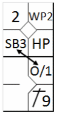
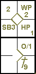
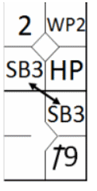
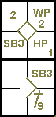
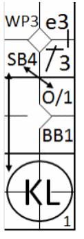
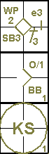
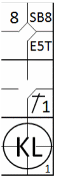

Comme mentionné précédemment, la règle 5.09(a)(14) de l'OBR stipule que Avec deux retraits et deux strikes au compte du batteur, si le coureur en troisième base, essaye de voler la plaque de but lors d’un lancer régulier et que la balle le touche dans la zone de strike, l’arbitre annonce « troisième strike », le batteur est retiré et le point n’est pas marqué ; avant deux retraits l’arbitre annonce « troisième strike », la balle est morte et le point compte.
Toute avance est enregistrée avec « O/1 », sauf si une tentative de vol était déjà en cours.
Exemple 115:
Avec les première et troisième bases occupées et moins de deux prises sur le frappeur, le coureur en troisième base
est touché par une balle lancée légalement alors qu'il traverse la zone de strikes.
L'arbitre valide le point, compte une prise pour le frappeur et accorde la deuxième base à l'autre coureur.
Le point est comptabilisé comme « volé » tandis que l'avancement en deuxième base est enregistré avec l'abréviation « O/1 »..
| WBSC | Transcription dans l'outil de scorage | Outil |
|---|---|---|
|
 |
/* Le premier frappeur gagnge la première base sur un 'Hit by pitch' */ action { batter -> HP } /* Le coureur avance sur un wild pitch */ action { runner1 -> WP } /* Le frappeur suivant réussit un coup sûr au champ droit, le coureur avance. */ action { batter -> 1B9 , runner2 -> + } /* Un coureur vole le marbre, le second avance par indifférence */ action { runner1 -> O/1 , runner3 -> SB } |
 |
Exemple 116: Commence par la même situation que l'exemple 115, mais maintenant le deuxième coureur essayait de voler la base suivante et se voit créditer d'une base volée.
| WBSC | Transcription dans l'outil de scorage | Outil |
|---|---|---|
|
 |
/* Le premier frappeur gagnge la première base sur un 'Hit by pitch' */ action { batter -> HP } /* Le coureur avance sur un wild pitch */ action { runner1 -> WP } /* Le frappeur suivant réussit un coup sûr au champ droit, le coureur avance. */ action { batter -> 1B9 , runner2 -> + } /* Les deux coureurs volent une base */ action { runner1 -> SB , runner3 -> SB } |
 |
Exemple 117:
Avec les première et troisième bases occupées, moins de deux retraits et deux prises sur le frappeur, le coureur en
troisième base tente de voler le marbre mais est touché par la balle en passant dans la zone de strikes.
L'arbitre retire le frappeur sur la troisième prise, valide le point et accorde une base supplémentaire à l'autre
coureur.
Le scoreur crédite donc le coureur qui a marqué avec un vol de base et note l'avancement en deuxième base avec la
notation « O/1 ».
| WBSC | Transcription dans l'outil de scorage | Outil |
|---|---|---|
|
 |
/* Le premier frappeur réussit un coup sûr en première base et profite d'une erreur pour
atteindre la deuxième base. */ action { batter -> 1B3 e3 } /* Le coureur profite d'un lancer fou pour atteindre la troisième base. */ action { runner2 -> WP } /* Le frappeur suivant atteint la première base grâce à un 'base on ball' */ action { batter -> BB } /* Le frappeur est retiré sur trois prises, un coureur vole le marbre, et l'autre avance sur l'indifférence */ action { batter -> KS , runner1 -> O/1 , runner3 -> SB } |
 |
Exemple 118:
Avec les première et troisième bases occupées, deux retraits et deux prises sur le frappeur, le coureur en troisième
base est touché par la balle dans la zone de strikes alors qu'il tente de marquer.
L'arbitre déclare le frappeur éliminé et (comme il s'agit du troisième retrait) aucun point n'est marqué.
| WBSC | Transcription dans l'outil de scorage | Outil |
|---|---|---|
|
 |
/* Le premier frappeur obtient la première base suite à une erreur de lancer du
défenseur de la cinquième base. */ action { batter -> E5T } /* Le coureur vole une base */ action { runner1 -> SB } /* Le frappeur suivant frappe un simple au lanceur, le coureur avance d'une base */ action { batter -> 1B1 , runner2 -> + } /* Le frappeur est retiré sur trois prises. */ action { batter -> KL } |